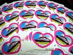
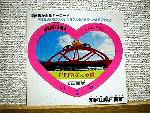

大王様に会うには、上の絵をクリック。ずずっと奥に写真館があるぞ。 |
|
【かえる古新聞】
|
|
【カエル速報】 1.カエルグッズ 2.カエルリンク 3.国家健全化計画 4.謎の髭男 5.とっくりくん 6.街頭で見た蛙 7.カエルショップ 8.奉納カエル絵馬 9.カエル・コスプレ |
| 大王様へのメール |
奉賛会推薦菓子
かえる饅頭 この欄に紹介するカエル物品や書籍についての情報を待っています。みんなで、掘り起こそう、かえる土産。かえる産品を奨励しよう！使うほど安く良くなるカエル品 |
|
|
君は当たったか、すぐ確認しよう！
|
 |
|
 |
なにしろ、大胆にもとくとくページに掲載してもらい『たった１枚』を抽選で配布しようとしたこと自体が無謀というものであった。
なにしろ全国のカエルファンはめざといので、応募が多数やってきて、１枚なんでしろものでは足りるはずでなかったのである。そこで、急遽、印南町に肉筆メールを送り『シールをもちいいっと分けてもらえんじゃろうか』とお願いしたところ、さすがカエル精神に支えられた町である。快く、シールの増量に応じてくれたのである。
応募ありがとねー
【げこげこ大王七世】当選者は次の通りです。それから、次の方にも郵送しますので、お届け先をメールしてくださいね。届け出メールと入れ違いになっていたら、許してね。
ほかにも応募したけど、落選したよーなんちゅーひとがいたら、連絡ください。全員当選になっているはずなのである(笑)
かえる饅頭印南町バージョン
【ひろあき同志発】名古屋のカエル饅頭に続いて、印南町の饅頭をゲットしたという情報が寄せられている。清酒『カエルの里』も飲んだ、という現地突撃ルポが次回のニュースだ。がんばるぞー
【げこげこ大王７世】今週は２度くらいは更新するぞーっ！！、なにしろ、検索サイトには、『新聞』として登録しているところもあるしな。謎の『かえる友の会』発見
【かえる娘Ｎ同志発】まだ極秘情報なのだが、関東地方に『かえる友の会』というのがあるらしいのだ。これって、わが全国かえる奉賛会に対抗する勢力なのであろうか。鋭意取材中なので、期待して待たれよ！| 写真の説明＝全国カエル奉賛会あてに、届いたカエルシールの救援物資。これは希少価値だ。在庫僅少 |